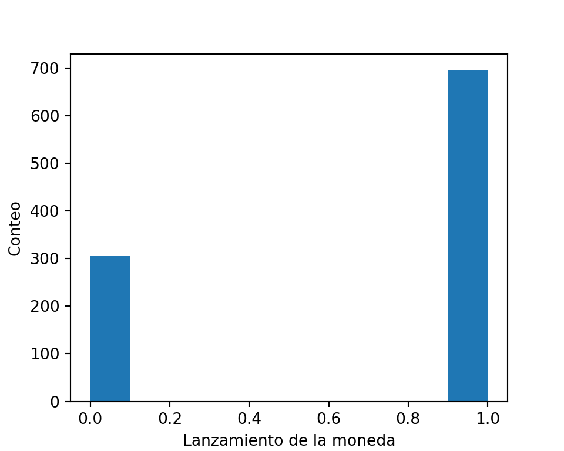
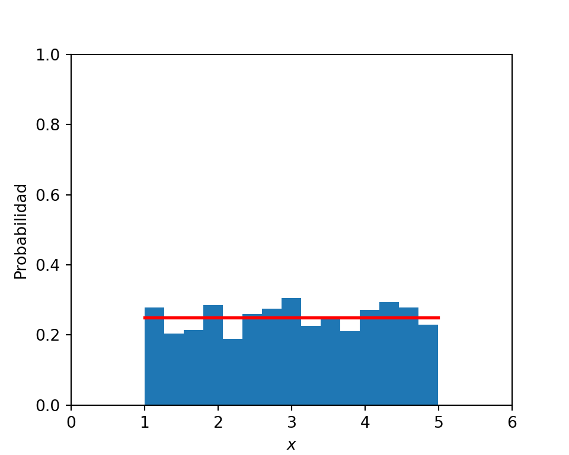
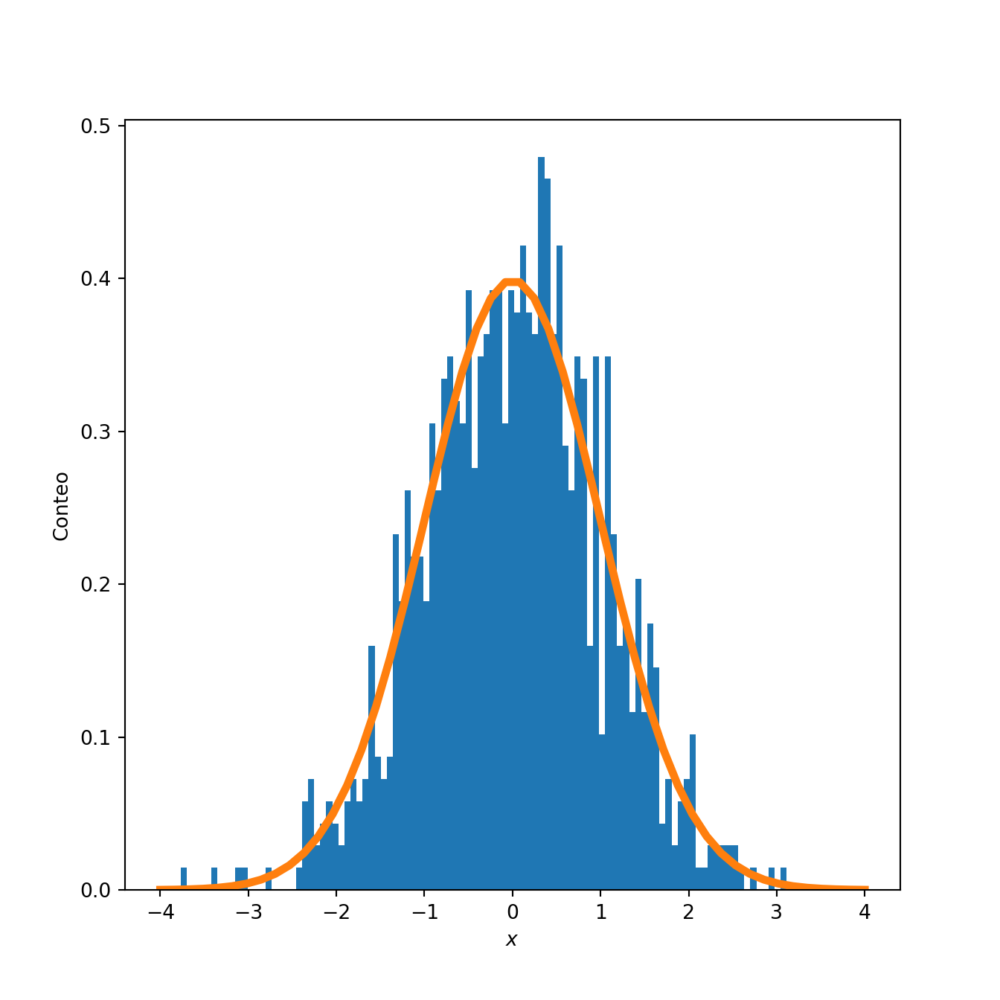

La noción básica de teoría de probabilidad nos indica que un experimento aleatorio es:
Un experimento cuyo resultado no puede ser determinado de manera adelantada.
Ejemplo: Un ejemplo clásico es lanzar la moneda al aire. Supongamos que se lanza la moneda 3 veces. Entonces el espacio muestral, denotado por \(\Omega\), es el conjunto de todos los posibles resultados del experimento:
\[
\Omega = \{ C C C, C C S, C S C, C S S, S C C, S C S, S S C, S S S \}
\] Los subconjuntos de \(\Omega\) son denominados eventos. Ejemplo: el evento \(A\) se define como que el tercer lanzamiento sea cara
\[ A = \{CCC, CSC, SCC, SSC \} \]
Decimos que el evento \(A\) ocurre si el resultado del experimento es alguno de los elementos en \(A\). Dado que los eventos son conjuntos, podemos aplicar las operaciones usuales a ellos, si definimos \(B\) como el que dos de tres lanzamientos sea cara
¿Cuál sería el resultado de?
\(A \cup B\)
\(A \cap B\)
\(A^c\)
\(B^c\)
Notar que si dos eventos \(A\) y \(B\) no tienen resultados en común, es decir \(A \cap B = \emptyset\), son denominados eventos disjuntos.
Conceptos básicos de probabilidad
Espacio Muestral: Se define como el conjunto de todos los posibles resultados del experimento, lo anotamos por \(\Omega\)
Suceso o Evento: Es cualquier subconjunto de \(\Omega\), usualmente lo anotamos con letras mayúsculas. \((A,B,C,\dots)\)
Espacio de sucesos: Es el conjunto de todos los subconjuntos de \(\Omega\). Lo anotamos por \(2^{\Omega}\).
Sigma Algebra: Es el conjunto de sucesos, \(\Gamma \subset 2^{\Omega}\), y que cumple con ciertas propiedades.
Clasificación del espacio muestral
Discreto
Numerable: Finito o Infinito.
Continuo
No numerable: Acotado o No acotado.
Definición formal de probabilidad
El par \((\Omega,\Gamma)\) se dice espacio medible, y la función \(\mathbb{P}:\Gamma \rightarrow \mathbb{R}^{+}\), es una medida de probabilidad si satisface:
\(0\leq \mathbb{P}[A] \leq 1, \forall A \in \Gamma\)
\(\mathbb{P}[\Omega]=1\)
Dados \(\displaystyle A_1,A_2,\dots \in \Gamma\), además \(A_1, A_2, \ldots, A_n\) disjuntos, entonces \(\displaystyle \mathbb{P}\left[ \bigcup_{i=1}^{n} A_n \right] = \sum_{i=1}^{n} \mathbb{P}[A_i], \hspace{5pt} \forall i\)
Este planteamiento probabilista, lleva a que los eventos del espacio muestral sean expresados de la forma más elemental posible, con el fin de poder aceptar la posibilidad de que cada posible resultado sea igualmente posible.
\[\mathbb{P}[A]=\dfrac{\#A}{\#\Omega}\]
Ejemplo: Para el caso del ejemplo del lanzamiento de la moneda, la probabilidad de cualquier evento es dada de manera intuitiva, si la moneda es balanceada. Entonces
Dado que el evento \(A\) es la unión de las ocurrencias de \(\{CCC\}, \ldots \{ SSS\}\), la regla de la suma mostrada anteriormente puede ser aplicada. Con \(\#A\) representando el número de ocurrencias en \(A\) y \(\# \Omega = 8\).
\(\mathbb{P}[A \cup B]=\mathbb{P}[A]+\mathbb{P}[B] - \mathbb{P}[A\cap B]\) . Si este último término \((\mathbb{P}[A\cap B])\) es cero, se dice que \(A\) y \(B\) son eventos mutuamente excluyentes.
\(\mathbb{P}[A-B]=\mathbb{P}[A\cap B^c]\)
\(\mathbb{P}[A \cap B]=\mathbb{P}[A]\mathbb{P}[B]\). Si \(A\) y \(B\) son independientes.
2 Probabilidad Condicional e Independencia
Probabilidad Condicional
¿Cómo cambian las probabilidades cuando se conoce la ocurrencia de algún evento \(B \subset \Omega\)?
Dado que el resultado depende de \(B\), el evento \(A\) ocurrirá si y sólo si \(A \cap B\), y la probabilidad de ocurrencia puede escribirse como:
Lo anterior, mide la probabilidad de que el evento \(B\) ocurra dado que el evento \(A\) ocurrió.
Ejemplo: Retomando el ejemplo del lanzamiento de la moneda 3 veces. Sea \(B\)el evento de que el número total de caras sea dos. La probabilidad condicional del evento \(A\)que el primer lanzamiento sea cara, dada la ocurrencia de \(B\) es:
\[\frac{(2/8)}{(3/8)} = \frac{2}{3}\]
Re escribiendo la ecuación Ecuación 1 e intercambiando el rol de \(A\) y \(B\) tenemos
\[
\mathbb{P}(A \cap B) = \mathbb{P}(A) \mathbb{P}(B|A)
\] Lo anterior puede ser generalizado como la regla multiplicativa de la probabilidad, que establece que para cualquier secuencia de eventos \(A_1, A_2, \ldots, A_n\)
Notar que si los eventos \(A\) y \(B\) son independientes se tiene:
\[\mathbb{P}[B|A]=\dfrac{\mathbb{P}[B]\mathbb{P}[A]}{\mathbb{P}[A]}=\mathbb{P}[B]\] Por lo que, en palabras, si los eventos son independientes, la probabilidad condicional se reduce a la probabilidad simple.
Independencia
Definición: Los eventos \(A_1, A_2, \ldots\) son independientes si para cualquier \(k\) y cualquier elección de distintos índices \(i_i, i_2, \ldots, i_k\), \[
\mathbb{P}\left( A_{i_1} \cap A_{i_2} \cap \ldots \cap A_{i_k} \right) = \mathbb{P}(A_{i_2}) \cdots \mathbb{P}(A_{i_k})
\]
Concepto crucial en estadística
Da cuenta de la falta de información entre eventos. Se dice que eventos \(A\) y \(B\) son independientes si el saber sobre la ocurrencia de \(B\) no cambia la probabilidad de ocurrencia de \(A\).
En muchos casos, la independencia de eventos es un supuesto del modelo. Esto es, se asume que existe una probabilidad \(\mathbb{P}\) tal que ciertos eventos son independientes.
Ejemplo Lanzamos una moneda sesgada \(n\) veces. Sea \(p\) la probabilidad de obtener cara (para una moneda balanceada, \(p = 1/2\)). Denotemos por \(A_i\) al evento de que el \(i\)-ésimo lanzamiento resulte en cara, \(i = 1,\ldots, n\). Entonces, \(\mathbb{P}\) debe ser tal que los eventos \(A_1, \ldots, A_n\) sean independientes, y \(\mathbb{P}(A_i) = p\) para todo i. Estas dos reglas especifican completamente \(\mathbb{P}\). Por ejemplo, la probabilidad de que los primeros \(k\) lanzamientos sean cara y los últimos \(n - k\) sean sello es
Se refiere a la determinación de la probabilidad de ocurrencia conjunta de dos o más eventos. Para el caso de dos eventos, como se vio anteriormente, se tiene:
\[\mathbb{P}[A \cap B \cap C]=\mathbb{P}[A] \mathbb{P}[B|A] \mathbb{P}[C| (A \cap B)]\]
Ejemplo:
Sea \(A\) el evento en el cual un hombre vivirá 10 años más y sea \(B\) el evento en el cual su esposa viva 10 años más. Supongamos que \(\mathbb{P}(A)=\frac{1}{4}\) y \(\mathbb{P}(B)=\frac{1}{3}\). Supongamos que \(A\) y \(B\) son eventos independientes, encuentre la probabilidad de que en 10 años:
Ambos estén vivos.
Al menos uno esté vivo.
Ninguno esté vivo.
Solamente la esposa esté viva
Solución:
Sea \(A\) el evento en el cual un hombre vivirá 10 años más y sea \(B\) el evento en el cual su esposa viva 10 años más. Supongamos que \(\mathbb{P}(A)=\frac{1}{4}\) y \(\mathbb{P}(B)=\frac{1}{3}\). Supongamos que \(A\) y \(B\) son eventos independientes, encuentre la probabilidad de que en 10 años:
Considere que se tienen 10 sacos de semillas. Se sabe que 4 son de una variedad y el resto de otra. Un cliente compra 3 sacos. ¿Cuál es la probabilidad de que los sacos sean de las dos variedades?
\(A:{ \text{Los sacos comprados son de las dos variedades} }\)
3 Distribuciones de probabilidad y variables aleatorias
Distribuciones de probabilidad
La distribución de probabilidad acumulada (cdf, del inglés cumulative distribution function) de una variable aleatoria \(X\) es \(F_X\) y se define por
\[
F_X(x) = P(X\leq x), \qquad x \in \mathbb{R}.
\]
La CDF tiene algunas propiedades:
\(F_x\) es no-decreciente
\(F_X\) es contínua hacia la derecha, esto es \(\underset{\epsilon \rightarrow 0^+}{lim} F_X(x+\epsilon) = F_X(x), \qquad \forall x \in \mathbb{R}\)
Uno de los modelos probabilísticos más intuitivos es simplemente lanzar una moneda (equilibrada o no).
Digamos que la probabilidad de obtener cara es \(p\), por lo tanto, la probabilidad de obtener sello es \(1-p\).
En términos probabilisticos podríamos decir que el lanzamiento de esta moneda corresponde a una Variable aleatoria Bernoulli. También denotado por \(Bernoulli(p)\).
Probemos generando un experimento en Python:
# imporando libreríasimport matplotlib.pyplot as pltfrom scipy.stats import bernoulli#Datosp=0.7#Probabilidad de ocurrencia n =1000#Tamaño de la muestramuestras = bernoulli.rvs(p,size=n) plt.figure(figsize=(5,4))plt.hist(muestras);plt.xlabel('Lanzamiento de la moneda')plt.ylabel('Conteo');plt.show()

La asignación de \(p=0.7\) a la probabilidad de obtener ‘cara’ y a \(1-p=0.3\) la probabilidad de obtener ‘sello’, es denominado la función de masa de probabilidad, para esta variable aleatoria en particular.
Es conveniente describir la variable aleatoria en términos de números en vez de lados de una moneda. Por convención denominamos \(cara=1\) y \(sello=0\).
Ejemplo
Dos amigos efectúan una apuesta a partir de lanzamiento de una moneda. Un amigo le dice al otro:
Te daré 5 por cada cara que salga y tu me pagarás 2 por cada sello que aparezca.
El pago promedio entonces será: \[ \mathbb{E}(pago) = 0.7 \times 5 + 0.3 \times (-2) = 2.9 \]
Entonces, si lanzamos la moneda \(N\) veces, donde \(N\) es un número muy grande, el pago final será de aproximadamente \((2.9 \times N)\).
Podemos observar cómo una variable aleatoria Bernoulli, podría generalizarse a algo como el lanzamiento de un dado, donde la función de masa de probabilidad asignaría una probabilidad a los números \(0-5\). En este caso, denotamos como \(p_i\) la probabilidad del \(i\)-ésimo resultado. Además:
Todos los \(p_i\) son no negativos, y
\(\sum_{i=0}^n p_i = 1\), con \(n=5\).
Una variable de tipo Bernoulli es denominada una variable aleatoria discreta. Esto significa que:
Tiene un número finito de resultados posibles o
Todos sus posibles resultados pueden ser listados.
6 Lanzando dardos: Variables aleatorias Uniformes
Lo opuesto a las variables aleatorias discretas, son las variables aleatorias continuas, que pueden tomar cualquier valor entre un rango de números.
La variable aleatoria continua más simple es la denominada Uniforme, denotada por \(Uniforme(a,b)\).
Una v.a. \(Uniforme(a,b)\), siempre se encontrará entre los números \(a\) y \(b\) con una probabilidad igual de estar en cualquier lugar dentro de ese rango.
Probemos generando una v.a. \(Uniforme(1,5)\)
import numpy as npimport matplotlib.pyplot as plta, b =1,5#Rango n =1000#Tamaño de la muestramuestras = np.random.uniform(low = a, high = b, size=n) plt.figure(figsize=(5,4))count, bins, ignored = plt.hist(muestras, bins =15, density=True)plt.plot(bins, np.ones_like(bins)/(b-a), linewidth=2, color='r')plt.xlim([0, 6]); plt.ylim([0, 1])plt.xlabel('x')plt.ylabel('Probabilidad');plt.show()

Para v.a. discretas, la función de masa de probabilidad asigna una probabilidad finita a cada resultado posible. Para v.a. continuas, cada resultado exacto, tiene probabilidad 0, pero ciertos rangos tienen mayor probabilidad que otros. Denominamos a esta función la función de densidad de probabilidad (pdf, por su sigla en inglés: probability density function). En el caso de la v.a. Uniforme, su pdf es:
\[p(x) = \frac{1}{(b-a)}\]
Similar a las funciones de masa de probabilidad, las restricciones de la pdf \(f\) son:
\(f(x)\) no es nunca negativa, y
El área total bajo la curva de \(f(x)\) es igual a 1.
Cualquier \(f\) que cumple estos requisitos, es una pdf válida.
Relacionado con la pdf, está la Función de distribución acumulada (cdf, por su sigla en inglés: cummulative distribution function). Por convención, se utiliza la munúscula \(f()\) para denotar a la pdf, y la mayúscula \(F()\) para denotar a la cdf.
\(F(x)\) es la probabilidad de que el valor de una variable aleatoria sea \(\leq x\). Así, \(F(x)\) es una función no decreciente que se aproxima a cero cuando \(x \to -\infty\) y se aproxima a uno cuando \(x \to \infty\).
7 Distribución Uniforme y los números pseudo-aleatorios
La distribución Uniforme es una de las más sencillas de entender y constituye la base para construir distribuciones más complejas, en términos teóricos y matemáticos. Por ejemplo:
Si se quiere simular una v.a. \(Bernoulli(p)\), se puede simular una variable aleatoria \(u\) desde una distribución \(Uniforme(0,1)\). Si \(u<p\), se establece \(B=cara\). Si no, \(B=sello\).
Si se quiere simular el lanzamiento de un dado, se puede dividir el rango \([0.0, 1.0]\) en seis regiones, donde la \(i\)-ésima región corresponde a la \(i\)-ésima cara del dado. Luego, se extrae un valor \(u\) desde la distribución \(Uniforme(0,1)\). La cara del dado corresponderá a la región \([0.0, 1.0]\) en que \(u\) caiga.
Si queremos simular una v.a. \(Exponencial\) (que veremos más adelante), se extrae \(u\) desde una distribución \(Uniforme(0,1)\), Luego se calcula \(-Log(u)\).
Digamos que conocemos la cdf \(F_X()\) de una v.a., y que además, podemos computar la inversa de la cdf \(F_X^{-1}(u)\), entonces:
Entonces \(F_X^{-1}(u)\) será una muestra de \(X\) si \(u\) es extraída desde una distribución \(Uniforme\).
Las librerías computacionales que simulan v.a. usualmente muestrean desde la distribución \(Uniforme\) como su operación fundamental.
Los computadores son máquinas determinísticas, capaces de seguir solamente reglas predeterminadas. La solución es emplear números pseudo aleatorios, que como esquema general, funcionan de la siguiente manera:
Se inicia una secuencia arbitraria de bytes. Los bits de esa secuencia son interpretados como los digitos de un número aleatorio \(Uniforme(0,1)\), expresado de forma binaria hasta una cantidad fija de lugares decimales.
Luego se aplica una compleja función matemática (de forma determinística) que transforma el arreglo (o matriz) de bytes en un nuevo arreglo de bytes. El nuevo arreglo de bytes es técnicamente una función determinista del anterior, pero en la práctica no se parece mucho al arreglo original.
Voltear un solo bit en la matriz de bytes original podría cambiar los bits en cualquier parte de la salida. La nueva matriz se trata como una nueva variable \(Uniforme(0,1)\), y así sucesivamente.
Una ventaja del uso de números pseudo aleatorios es que puede configurar manualmente la matriz de bytes inicial al comienzo de un programa. Esto se denomina la semilla. Lo anterior tiene algunos usos:
Si hay un error en algún programa aleatorio que sólo ocurre algunas veces, puede hacerse perfectamente reproducible y averiguar qué está pasando.
Si se necesita que los resultados de los análisis sean exactamente reproducibles, se puede establecer la semilla en la secuencia de comandos.
Cuando escribe pruebas, puede establecer la semilla y asegurarse de que el resultado sea exactamente el esperado.
Probar simulando distribuciones a partir de números pseudo-aleatorios, graficar los resultados y comprobar con el generador de distribuciones:
Simular 1000 números aleatorios a partir de una distribución exponencial, con \(\lambda = 0.5\) (fijarse en la parametrización del código).
Simular 1000 números aleatorios a partir de una distribución normal, con \(\mu = 10\), y \(\sigma^2 = 3\).
Simular 1000 números aleatorios a partir de una distribución chi-cuadrado, considere que el cuadrado de una distribución normal estándar se distribuye chi cuadrado con 1 grado de libertad.
8 Distribución Normal
Sea \(X\) una variable aleatoria que toma valores reales, esto es: \(-\infty<x<\infty\), diremos que \(X\) sigue una distribución normal (o Gaussiana) si su función de densidad está por:
Si \(X\) sigue una distribución normal de parámetros \(\mu\) y \(\sigma\), entonces se cumple que:
\(E[X]=\mu\)
\(V[X]=E[X^2]-(E[X])^2=\sigma^2\)
Si \(Y=aX+b\) entonces \(Y\) sigue una distribución normal de parámetros \(a\mu+b\) y \(a^2\sigma^2\), respectivamente. Se escribe: \(Y \sim N(a\mu+b,a^2\sigma^2)\)
Densidad de una distribución normal
Aplicación computacional
Extraer muestras desde la distribución normal
import numpy as npmu, sigma =0, 0.1# mean and standard deviationmuestra = np.random.normal(loc = mu, scale = sigma, size =3)print(muestra)
import scipy.stats as ssimport numpy as npimport matplotlib.pyplot as plt# Estableciendo el gráficofig = plt.figure(figsize=(7,7));ax = fig.add_subplot(111)# Generando el histograma y la fdpn, mu, sigma =1000, 0, 1data = np.random.normal(size = n, loc=mu, scale=sigma)myHist = ax.hist(data, bins =100, density=True);rv = ss.norm(mu, sigma)x = np.linspace(-4,4)h = ax.plot(x, rv.pdf(x), lw=4);ax.set_xlabel('$x$')ax.set_ylabel('Conteo')# mostrar gráficoplt.show()

Ejemplo distribución Normal
La duración de un laser semiconductor a potencia constante tiene una distribución normal con media 7.000 horas y desviación estándar de 600 horas.
¿Cuál es la probabilidad de que el laser falle antes de 5.000 horas?
¿Cuál es la duración en horas excedida por el 99% de los lasers?
Si se hace uso de tres laser en un producto y se supone que fallan de manera independiente. ¿Cuál es la probabilidad de que los tres sigan funcionando después de 6700 horas?
Resolución ejemplo
Por enunciado, sabemos que si definimos la variable aleatoria \(X\) como:
\[X= \text{Duración de un laser semiconductor a potencia constante.}\] Entonces, podemos afirmar que \(X\sim N(7000,600^2)\). Luego,
Ahora nos devolvemos a la variable original \(X\), así: \[-2.325=\dfrac{x-7000}{600} \Rightarrow x=5605\] Por lo que, la duración en horas excedida por el 99% de los lasers es de 5605 horas.
Ahora, para el item c) debemos reconocer como modelar la variable aleatoria del problema. Definimos la variable aleatoria: \[Y= \text{ N° de lasers que siguen funcionando después de 6700 hrs}\] Debimos reconocer que esta variable aleatoria tiene distribución \(Bin(3,p)\) en donde \(p\) es la probabilidad que uno de los lasers siga funcionando después de 6700 horas. Por lo que primero calculamos este valor: \[\begin{align*}
\mathbb{P}(X>6700)&=1-\mathbb{P}(X\leq 6700)=1-\mathbb{P}\left(\dfrac{X-7000}{600} < \dfrac{6700-7000}{600}\right)\\
&=1-\mathbb{P}(Z<-0.5)=1-.3085=0.6915
\end{align*}\] Así, \(Y\sim Bin(3,0.6915)\). Finalmente, lo preguntado lo planteamos como: \[\mathbb{P}(Y=3)=\mathbb{P}(Y\leq 3)-\mathbb{P}(Y\leq 2)= 1- 0.657 = 0.343\]
9 Distribución Exponencial
Sea \(X\) una variable aleatoria continua que toma valores positivos, diremos que \(X\) sigue una distribución exponencial con parámetro \(\alpha>0\) si su función de densidad está dada por: \[\begin{align*}
f_{X}(x)=\begin{cases}
\alpha e^{-\alpha x} \hspace{20pt} x\geq 0 \\
0 \hspace{20pt} e.o.c
\end{cases}
\end{align*}\] Además se cumple que:
\(E[X]=\dfrac{1}{\alpha}\)
\(V[X]=\dfrac{1}{\alpha^2}\)
Densidad de una distribución exponencial
Aplicación computacional
Extraer muestras desde la distribución exponencial